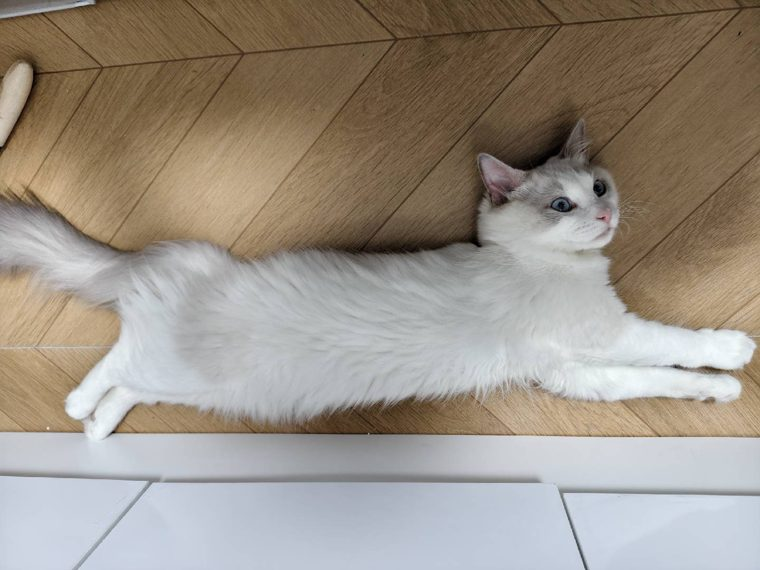
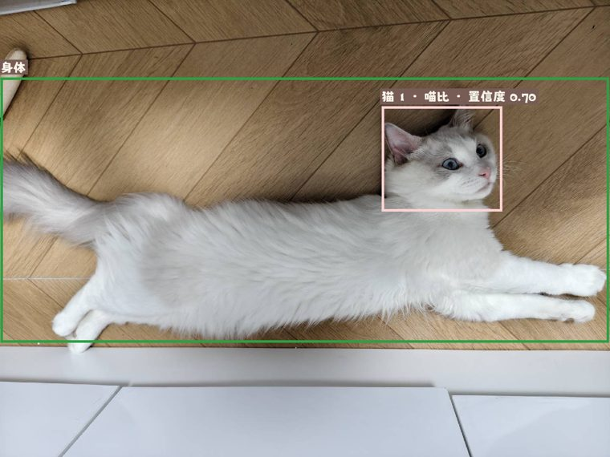
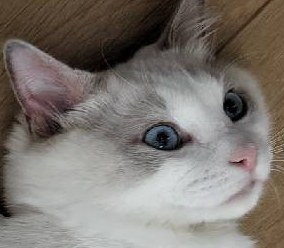
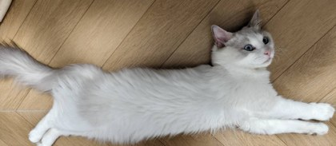
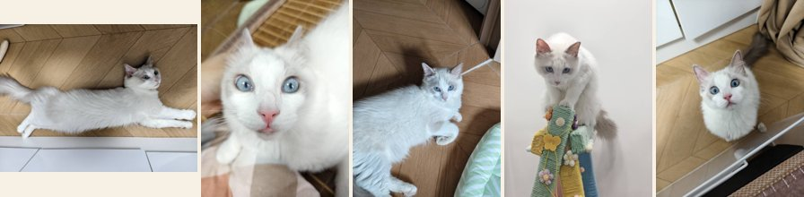
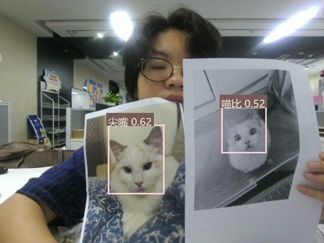
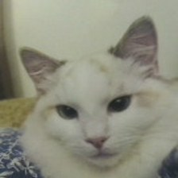
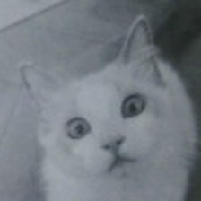

00 · 概览
一条链上的六个环节
整个识别器只有一条数据链：照片或摄像头帧 → 一次双类别 YOLO 检测 （同时输出猫身与猫脸）→ ROI 处理 + 脸身关联 → 脸 / 身两个 MobileOne-S1 编码器 （各出一个 384 维向量）→ 余弦匹配 + 0.62/0.38 融合 → 动态阈值决策 。没有级联检测器，没有传统特征（SIFT / NekoNet / XGBoost 均已移除），整条链在 GPU 上约 28 ms。
为什么 · 设计取舍
用一次双类别检测替代两次串行检测。 猫身与猫脸由同一个 YOLO11n 模型在一遍前向里同时输出（类别 0 = cat_body，类别 1 = cat_face）。检测器只有 10 毫秒级别的延时，是链路里最贵的环节；合并成一次前向后，多猫场景的检测成本不再随猫的数量翻倍。权重与板端 demo_hisi 同源，界面端与板端行为一致。

输入 · 真实测试照片（喵比，1440×1080，来自注册库）。下面所有演示都基于这张照片与其真实识别结果。
本次实测的分阶段耗时
单张照片识别的耗时分解
真实运行结果（CUDA / YOLO11n 640 输入）· 合计 28.2 ms
查看数据表
阶段 耗时 占比 统一检测 18.1 ms 64% 脸部特征 2.7 ms 10% 身体特征 4.1 ms 15% 脸身关联 0.03 ms ≈0% 融合匹配 3.2 ms 11%
检测占了近三分之二——这是把"减少检测次数"作为架构第一原则的原因；双分支特征、匹配全部是毫秒以下到个位数毫秒的廉价环节。接下来的每一节，我们沿着这条链逐个环节拆开。
01 · 统一检测
YOLO11n：一次前向，两类框
输入整帧 BGR 图像，缩放到 640×640 送入 YOLO11n，一次前向同时得到两类目标：猫身框 （类别 0）与猫脸框 （类别 1）。置信度阈值取两类中较小者 0.10 （先召回，后由匹配环节把关），NMS 的 IoU 阈值 0.50。
输入帧 · 原始照片（不缩放，特征仍取自全分辨率）
真实输出 · 绿框 = 身框（扩展 15%），粉框 = 脸框（扩展 10%），标签含身份与融合置信度。脸框在身框内部，由下一步的关联逻辑建立对应。
NMS 在做什么
YOLO 会对同一个目标输出多个候选框。NMS 按置信度排序，保留最高分框，抑制与其 IoU 超过 0.50 的其他框——更早抑制同一张脸的重复框，同时保留并排猫脸 （源码注释原文）。下图为示意（真实输出已经是 NMS 之后的结果）。
检测输出：3 个候选框
A · conf 0.86
B · conf 0.80（与 A 重叠）
C · conf 0.09
NMS
最终输出：1 个高置信脸框
仅保留 A
A 与 B 的 IoU 0.65 > 0.50 → 抑制 B
C 的 conf 0.09 < 0.10 → 置信度滤除
run_gui.py · L522-547 · _detect_modalities()
def _detect_modalities (self, frames_bgr):
results = self.detector.predict(
source=frames_bgr, imgsz=640 ,
conf=min(CONFIDENCE, BODY_CONFIDENCE), iou=NMS_IOU, # 0.10 / 0.50
classes=[BODY_CLASS_ID, FACE_CLASS_ID], # 0=cat_body, 1=cat_face
device=self.device_arg, verbose=False, save=False)
# 一次前向，随后拆成脸组与身组两路
为什么 · 这样设参
置信度 0.10 而非更高 ：检测只负责"找出所有候选"，身份判别交给后面的特征匹配。宁可多检出一个框，也不漏掉一张正脸——漏检无法补救，误检会被匹配环节拒掉。IoU 0.50 ：0.50 已足够把"同一个目标的多候选"并成一个，又不会把并排坐的两只猫吞成一个。
常量 值 含义 IMGSZ 640 YOLO 输入边长（矩形自动缩放） CONFIDENCE / BODY_CONFIDENCE 0.10 / 0.10 脸 / 身两类检测置信度下限 NMS_IOU 0.50 NMS 抑制阈值 classes [0, 1] cat_body = 0，cat_face = 1
02 · ROI 处理
扩边、裁剪、统一到 224×224
检测框直接裁剪会切到耳朵、下巴或毛发边缘，特征提取器看不到足够上下文。因此脸框再外扩 10%，身框外扩 15% ，裁出后缩放（INTER_CUBIC）到 224×224 作为编码器输入。越界部分被钳制到图像边界；若扩展后区域无效则丢弃该框。
脸框（真实框坐标）
外扩 10%
284×248 → 224×224
身框（真实框坐标）
外扩 15%
1436×626 → 224×224
越界部分钳制到图像边缘；扩边后区域无效的框直接丢弃

脸 ROI · 284×248 原始裁剪（显示按比例缩放）→ 缩放到 224×224
身 ROI · 1436×626 原始裁剪 → 缩放到 224×224。身体分支看到的正是这种大范围花色 / 体型信息。
run_gui.py · L350-363 · expanded_box_with_margin() + L480-483 · 裁剪与缩放
dx, dy = (x2 - x1) * margin, (y2 - y1) * margin
left, top = max(0 , int(x1 - dx)), max(0 , int(y1 - dy)) # 越界钳制
right, bottom = min(width, int(x2 + dx)), min(height, int(y2 + dy))
# 脸用 MARGIN=0.10；身用 BODY_MARGIN=0.15
resized = cv2.resize(frame_bgr[top:bottom, left:right],
(224 , 224 ), interpolation=cv2.INTER_CUBIC)
为什么 · 扩边比例不同
脸框扩 10% 就够——脸是密集判别区，太多背景反而稀释特征；身框扩 15%——身体框往往贴边切掉尾巴和爪子，多一点余量让花色、体型信息完整。两类 ROI 都进 224×224 是为了与 MobileOne 训练时的输入口径一致。
03 · 关联
脸归身：中心点落入最小身框
检测输出是两组独立的框，还"不知道"哪张脸属于哪只猫。关联规则只有一条：取每张脸的中心点，找出所有包含该点的身框，归属其中面积最小的那个 。没有身框包含它 → 该脸作为独立个体（仅脸分支）；身框没匹配到任何脸 → 保留为仅身个体。
猫甲（身框）
脸
中心落入 → 归属猫甲
猫乙（身框）
脸
中心落入 → 归属猫乙
中心不在任何身框 → 独立个体（仅脸分支）
多张脸落入同一身框时，只保留置信度最高的那张
run_gui.py · L706-734 · _associate_subjects()
containing = [for index, body in enumerate(bodies)
if body.box[0] <= center_x <= body.box[2]
and body.box[1] <= center_y <= body.box[3]]
if containing:
body_index = min(containing, key=lambda i: area(bodies[i])) # 最小身框
body_faces[body_index].append(face_index) # 脸 → 身 归属
为什么 · 选最小框而不是最大框
并排两只猫时，外侧的大身框常常同时包住两张脸——若选最大框，两只猫会被归给同一只。选最小包含框 保证了每张脸都归属最"贴身"的主人；一个身框最多再留一张置信度最高的脸（同框多脸取高置信）。
关联后形成"个体"
关联结果是 (body | None, face | None) 的个体列表。每个个体进入特征提取时独立成路：双框齐全走"脸 + 身"双分支，只检出脸走脸分支，只检出身走身分支——融合逻辑在匹配阶段按可用分支自动降级。
04 · 特征
MobileOne-S1 × 2：双分支 384 维
每个个体提取两类特征：脸编码器 和身编码器 ，都是 MobileOne-S1 骨干 + 384 维投影头。输入做 ImageNet 均值/方差归一化（0.485, 0.456, 0.406 / 0.229, 0.224, 0.225），输出做 L2 归一化 ——归一化后的向量，余弦相似度退化为内积，匹配阶段就是一次矩阵乘。两类 ROI 各自批量 送入 GPU，多猫同框也只有两批前向。
MobileOne 重参数化
MobileOne 在训练时把每个卷积替换为多分支过参数化 结构（3×3 + 1×1 + 平均池化旁路等），提升训练收敛；部署时把这些分支折叠回一个等价的 3×3 卷积 （重参数化），推理速度逼近直筒网络。demo 在模型加载时用 timm 的 reparameterize_model 完成折叠。
训练态 · 多分支过参数化
3×3 conv + BN
1×1 conv + BN
1×1 + avgpool + BN
identity + BN
+
部署态 · 折叠为单分支（输出完全等价）
等价 3×3 卷积
每层只执行 1 次
reparameterize_model（加载时执行一次）
训练时多分支收敛更快；部署时单分支推理更快，二者输出一致
mobileone_embedder.py · L11-32 · StudentModel
self.backbone = timm.create_model("mobileone_s1.apple_in1k" ,
pretrained=False, num_classes=0 , global_pool="avg" )
self.projection = nn.Sequential(
nn.Linear(self.backbone.num_features, 384 , bias=False),
nn.BatchNorm1d(384 ))
def forward (self, images):
features = self.backbone(images)
return F.normalize(self.projection(features), dim=1 )
翻转 TTA：只用于建库
注册照可能偏头、不对称——建库时把每张 ROI 水平翻转后再前向一次，两次特征向量相加再归一化 ，用 TTA 平均抵消对称性噪声。运行时推理关闭 TTA ，只做单次前向，省一半特征计算（README 明言："关闭翻转 TTA"是低延迟链路的一部分）。
原图
前向
v
水平翻转
前向
v′
⊕
相加平均 → 再 L2 归一化
仅注册库构建时启用（flip_tta=True）· 推理路径只走左侧单次前向
为什么 · 运行时不做 TTA
TTA 平均让注册特征更鲁棒——注册照一旦存下来就不变，多花一次前向完全值得；但摄像头每帧都要识别，TTA 意味着帧率减半。而且 GPU 批量推理时，TTA 的两次前向还要拼成一个 batch（torch.cat 翻倍），代价更明显。所以只把 TTA 留给"建库时"。另一个隐藏约束 ：CUDA 每个新线程的首次前向要付约 750 ms 内核装载开销，见第 09 节。
05 · 模板库
每只猫一张均值模板
注册库为每个身份保存 5 张注册照 ，每张提取 384 维特征后，取逐维均值 再L2 归一化 ，得到该身份的一张模板向量。脸、身各建一套模板矩阵——匹配时整批矩阵乘，一条指令算出所有身份的相似度。建库口径与板端 gallery 一致，保证 PC 端与板端识别同一只猫的结果可复现。

注册集 · 喵比的 5 张注册照（界面要求"恰好 5 张"）。每张经统一检测 → 脸 / 身 ROI → 编码器（含翻转 TTA），得到 5+5 个 384 维向量。
5 个 384 维特征（每张注册照一个）
μ
逐维均值
L2 归一化
单位向量 · 余弦 = 内积
→ 喵比 · 模板向量（脸 / 身各一套，与板端建库口径一致）
run_gui.py · L995-1019 · _rebuild_templates()
vectors = np.stack([item.feature for item in self.gallery
if item.identity == identity])
template = vectors.mean(axis=0 ) # 逐维均值
template /= max(np.linalg.norm(template), 1e-9 ) # L2 归一化
# 身体分支同样建模板；缺失则占位 NaN，匹配时跳过该身份该分支
为什么 · 用均值模板而不是最近邻
直接拿 5 张原始特征做最近邻，需要 5 次比对，还会被最"怪"的一张注册照带偏。均值模板把 5 张压成 1 张，匹配退化为一次矩阵乘 = N 个内积 ，29 张图库的匹配只需 3.2 ms。模板在每次注册 / 加载后重建，增量更新不落盘，运行时内存中保存。
06 · 匹配与融合
余弦相似度 × 0.62/0.38 加权
查询特征与全部模板做内积（L2 归一化后即余弦）。脸分支 和身分支 各得一组分数；两个分支都可用时，按 0.62 × 脸 + 0.38 × 身 融合成最终分数；只有单分支时直接用该分支分数。随后按分数排序取 Top-1 身份与 Top-2 分数。
余弦相似度长什么样
θ ≈ 48°
q 查询特征
t 模板特征
cos θ = 0.67（本例脸分支 Top-1 为 0.680）
夹角越小越像；L2 归一化后余弦 = 内积
→ 一次矩阵乘算出查询与全部身份模板的分数
真实的脸分支分数（本轮查询 vs 6 个身份）
脸分支余弦分数 · 按分数降序
查询 = 喵比注册照 · 小脸档（面积 4.5% < 10%）阈值 0.50 虚线 · Top-1 喵比 0.680 遥遥领先
查看数据表
身份 脸分支余弦 喵比 0.6803 尖嘴 0.4585 圆子 0.3629 cat_224149 0.2870 cat_226675 0.1240 meimei 0.0840
融合：0.62 的脸 + 0.38 的身
双分支融合分解（真实分数）
身分支分数为按融合结果反推（≈0.725）；标尺 0–0.8 · 融合 0.6974 高于小脸档阈值 0.50
run_gui.py · L770-784 · _fuse_scores()
if face_scores is None: return body_scores # 无脸 → 仅身
if body_scores is None: return face_scores # 无身 → 仅脸
both = face_ok & body_ok
scores[both] = FACE_WEIGHT * face_scores[both] \
+ BODY_WEIGHT * body_scores[both] # 0.62 / 0.38
为什么 · 62/38 而不是各半
脸是最强判别信号（花纹、眼周、耳形），所以权重更高；但脸小、模糊或背对镜头时，身分支（花色 / 体型）仍能兜底。两分支都缺失（如只拍到尾巴）的个体不会进入匹配。融合发生在分数层 而非特征层——两个异构特征空间不用强行拼接，各算各的余弦再加权，还天然支持单分支降级。
07 · 决策
动态阈值：小脸更严格
拿到 Top-1 / Top-2 分数后，能不能直接宣布"识别成功"？规则分两层：动态阈值 按脸框面积占画面比例分三档——小脸像素少、特征噪声大，门槛反而更严；决策余量 要求第一名至少比第二名高 0.03 ，避免两个身份分不出时硬猜。此口径与板端 types.hpp MatcherConfig 同构。
小脸 < 10%
阈值 0.50
中脸 10% – 35%
阈值 0.45
大脸 ≥ 35%
阈值 0.40
0%
10%
35%
100%
本查询脸面积 4.5% → 小脸档 0.50
面积占比 = 脸框像素 ÷ 画面像素 · 小脸像素少、特征噪声大，所以门槛更严
本次查询的真实判定
run_gui.py · L1030-1037（阈值）+ L826（判定）
def _adaptive_threshold (face_area):
if face_area >= 0.35 : return 0.40 # 大脸：像素足，放宽
if face_area >= 0.10 : return 0.45 # 中脸
return 0.50 # 小脸：特征噪声大，门槛更严
passed = score >= threshold and (len(order) == 1
or decision_margin >= MATCH_MARGIN) # 0.03
为什么 · 阈值随面积变化
同样的余弦 0.45，大脸可能是"不够像"，小脸却可能是"已经很像但噪声太大"。按面积放宽大脸、收紧小脸，是用先验的像素质量 校准后验的判定尺度 。另外注意：界面仍直接显示最相近身份 （用户要求）——passed 只影响"是否锁定显示 / 是否参与投票"，不会把猫的名字抹掉。
脸框面积占比 档位 判定阈值 ≥ 0.35（大脸） LARGE 0.40 ≥ 0.10（中脸） MEDIUM 0.45 < 0.10（小脸） SMALL 0.50 Top-1 与 Top-2 最小差（MATCH_MARGIN） 0.03
08 · 摄像头链路
节流推理 + 多帧锁定
摄像头页把"抓帧"与"识别"解耦：采集线程以 1280×720 抓帧（小脸像素更多，YOLO 置信度更稳），但识别节流到至少间隔 0.3 秒 （约 3.3 次/秒，GPU 推理不阻塞界面）；Tk 主线程每 30 ms 轮询刷新画面。识别结果加入多帧锁定 ：同一身份连续 5 帧出现才锁定显示，且只有通过动态阈值的身份才参与投票——单帧误报无法撼动显示。

真实多猫快照 · 摄像头页同一帧识别出两只猫（尖嘴 + 喵比），各自带身框与脸框标签。下面的两小图是界面保存快照时自动裁剪的"检测照"。

猫 1 检测照 · 尖嘴
猫 2 检测照 · 喵比
识别帧（间隔 0.3 s）
喵比
尖嘴
第 5 帧 → 连续 5 次 → 锁定显示
尖嘴第 7 帧为误报：未通过动态阈值 → 不投票；锁定后身份不因单帧波动消失（约 1.5 s 稳定）
run_gui.py · L1236-1249 · _capture_loop() 节流与投票
if now - self._last_detect >= self.PREVIEW_MIN: # 0.30 s 节流
matches, timing = self.service.identify_frame(frame)
present = {m.identity for m in matches if m.passed} # 只统计通过者
self._votes = {i: self._votes.get(i, 0 ) + 1 for i in present}
self._locked_ids = {i for i, c in self._votes.items() if c >= LOCK_FRAMES} # 5 帧
为什么 · 三道防抖闸门
① 节流 ：28 ms 的推理在 30 fps 采集下每一帧都做是浪费，0.3 s 间隔已经远超实时所需；② 多帧锁定 ：猫甩头、短暂遮挡会造成单帧身份跳变，5 帧锁定让显示"记性好、忘性慢"；③ 结果指纹 ：面板只按"画面里是谁"重建（指纹不含每帧微变的置信度），身份集合不变时 UI 完全静止，不闪不抖。
09 · 工程细节
常驻线程与一次性的 CUDA 热身
GPU 推理有个被实测出来的特性：每个新线程的首次 CUDA 前向要付约 750 ms （内核 / 引擎装载），之后同线程再调用只需十几毫秒。如果每次点击都新建线程推理，这笔开销就每次重付——单张照片"检测"会莫名变成 0.8 秒。因此 demo 用常驻单线程队列 （BackgroundWorker）串行执行所有后台任务：模型加载、图片识别、身份注册，热身只发生一次。
run_gui.py · L217-247 · BackgroundWorker + L425-433 · _warmup()
# 把所有后台任务放同一常驻线程顺序执行，CUDA 首次前向只付一次
self._queue = queue.Queue() # task / on_success / on_error 三元组
...
def _warmup (self): # 加载完成后立即
for _ in range(2 ): # 2 轮
self._detect_modalities([blank]) # 检测路径
self._embed_crops([crop]) # 脸特征路径
self._embed_crops([crop], model=self.body_model) # 身特征路径
注册同样讲究：先推理后落盘 ——5 张图先全量跑完特征提取，任一张没检测到猫脸就直接报错，绝不写入；落盘采用"临时目录 + os.replace "原子替换，中途失败自动清理，registry.json 用 sha256 源哈希防重。界面每张注册照的向量与照片都持久化到 data/gui_registry ，下次启动直接加载。
为什么 · 线程模型决定了交互手感
所有 UI 回调经 root.after 转回主线程；推理线程永远不碰 Tk 控件。摄像头页更进一步：抓帧、识别都在后台线程，主线程只刷新画面与结果卡片——即使某帧识别异常（异常被捕获并显示状态），刷新链也绝不被中断。
10 · 附录
全量常量与实测数据
核心常量（run_gui.py 顶部）
常量 值 含义 DIMENSION 384 特征维度 FACE_WEIGHT / BODY_WEIGHT 0.62 / 0.38 融合权重 MARGIN / BODY_MARGIN 0.10 / 0.15 ROI 外扩比例 FIXED_MATCH_THRESHOLD 0.35 固定阈值（非自适应时） MATCH_MARGIN 0.03 Top1−Top2 最小差 LARGE / MEDIUM_FACE_AREA 0.35 / 0.10 面积分档边界 阈值 L / M / S 0.40 / 0.45 / 0.50 三档动态阈值 PREVIEW_MIN 0.30 s 摄像头识别节流 LOCK_FRAMES 5 多帧锁定帧数 CAMERA / PREVIEW 1280×720 / 960×540 采集 / 预览分辨率 注册图数 5 / 身份 DEFAULT_IMAGES_PER_IDENTITY
实测（真实运行，CUDA）
项目 值 端到端（照片） 28.2 ms 解码（不计入） 12.9 ms 统一检测 18.1 ms 脸 / 身特征 2.7 / 4.1 ms 关联 / 匹配 0.03 / 3.2 ms Top-1 分数（喵比） 0.6974 Top-2 分数（尖嘴） 0.4318 决策余量 0.2656 图库 6 身份 · 29 张
与板端（demo_hisi）的对照
统一 YOLO 权重同源：cat_body_face_yolo11n_v1.pt，板端示例可视化见 demo_hisi/examples/unified_yolo_face_body_roi.jpg。
动态阈值与板端 types.hpp MatcherConfig 同构（源码注释明确注明）；模板建库口径一致，PC 端与板端可共享注册库。
PC 端为演示关闭了翻转 TTA、不加载 NekoNet / SIFT / XGBoost，构成低延迟链路。